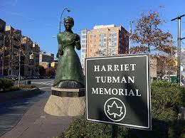
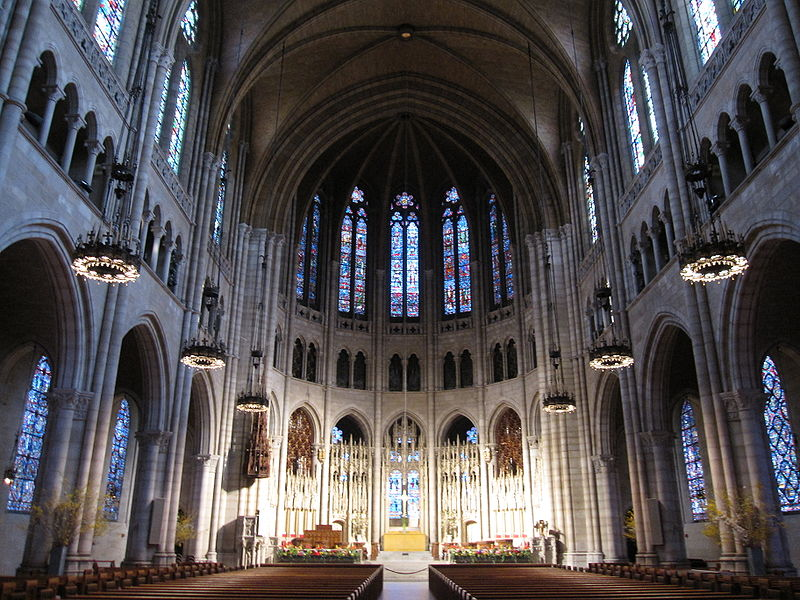

Central Harlem
Central Harlem is bounded by Fifth Avenue on the east, Central Park on the south, Morningside Park, St. Nicholas Avenue and Edgecombe Avenue on the west, and the Harlem River on the north. A chain of three large linear parks—Morningside Park, St. Nicholas Park and Jackie Robinson Park—are situated on steeply rising banks and form most of the district's western boundary. On the east, Fifth Avenue and Marcus Garvey Park, also known as Mount Morris Park, separate this area from East Harlem. The bulk of the area falls under Manhattan Community Board No. 10. In the late 2000s, South Harlem, emerged from area redevelopment, running along Frederick Douglass Boulevard from West 110th to West 138th Streets.

West Harlem
The West Harlem neighborhoods of Manhattanville and Hamilton Heights comprise part of Manhattan Community Board No. 9. The two neighborhoods' area is bounded by Cathedral Parkway (110th Street) on the South; 155th Street on the North; Manhattan/Morningside Ave/St. Nicholas/Bradhurst/Edgecome Avenues on the East; and Riverside Park/the Hudson River on the west. Morningside Heights is located in the southern most section of West Harlem. Manhattanville begins at roughly 123rd Street and extends northward to 135th Street. The northern most section of West Harlem is Hamilton Heights.

East Harlem
Also called Spanish Harlem, within Manhattan Community Board 11, is bounded by East 96th Street on the south, East 142nd Street on the north, Fifth Avenue on the west, and the Harlem River on the east.
An Italian neighborhood during the 1800s and early 1900s, East Harlem—now known as "El Barrio"—welcomed a wave of Puerto Rican emigrants beginning in the 1920s. You can see the influence of the “Nuyorican” community (New York plus Puerto Rican) in cultural institutions like El Museo del Barrio, which focuses on Latin American and Caribbean artists. There are also a slew of Cuban, Mexican and Spanish restaurants in the neighborhood. Vestiges of the Italian era remain, evidenced in longtime establishments like the always-booked Rao’s and the decidedly old-school Patsy’s pizzeria—a former hangout of Yankee Joe DiMaggio.